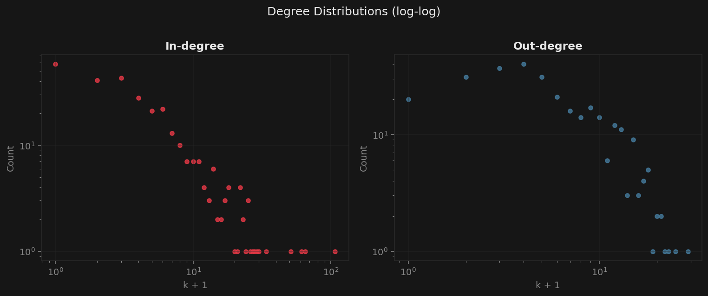
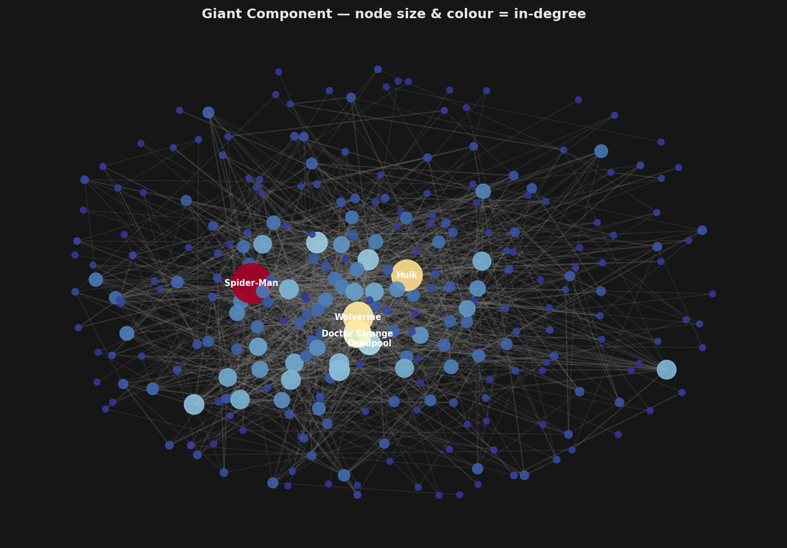
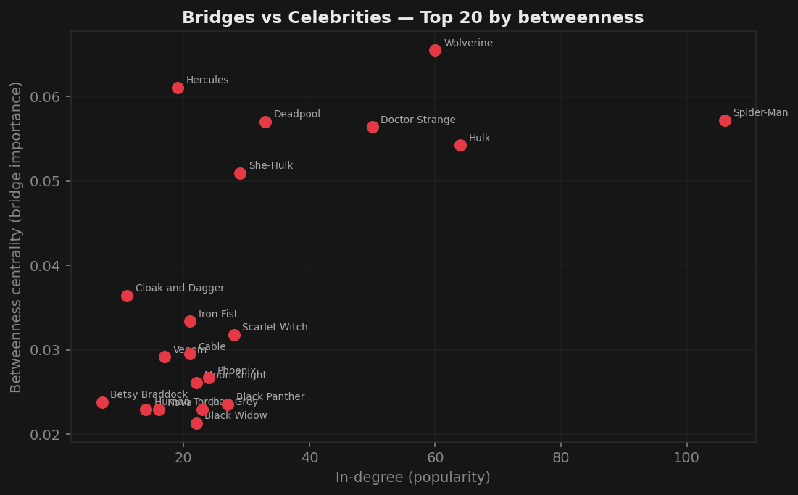

Who holds the Marvel universe together?
We loaded 303 Marvel superheroes and every Wikipedia link between them. Popularity isn't the whole story — some characters matter because of where they sit, not how famous they are.
The network
The dataset is a directed graph: an edge A → B exists when A's Wikipedia article links to B's. We loaded all 303 nodes before adding edges so that isolated characters — those with no links at all — aren't silently dropped.
| Metric | Value |
|---|---|
| Characters (nodes) | 303 |
| Directed links (edges) | 1,784 |
| Undirected pairs | 1,434 |
| Average undirected degree | 9.47 |
| Giant component | 277 nodes (91%) |
| Isolated characters | 17 |
The directed count (1,784) is higher than the undirected count (1,434) because 350 directed edges are mutual — both A→B and B→A exist, but they collapse into a single undirected pair.
Degree distributions
We plotted in-degree and out-degree on log-log axes. In-degree stretches into a long tail that follows a power law — a straight line on log-log axes. Out-degree doesn't.

The asymmetry makes sense once you think about who controls each edge type. In-degree is conferred by others — anyone writing a Marvel article can link to Spider-Man. Out-degree is bounded by the length of a single article. Popularity compounds; article length doesn't.
| Rank | Character | In-degree |
|---|---|---|
| 1 | Spider-Man | 106 |
| 2 | Hulk | 64 |
| 3 | Wolverine | 60 |
| 4 | Doctor Strange | 50 |
| 5 | Deadpool | 33 |
The network drawing
We drew the giant component (277 nodes) using a force-directed layout. Node size and colour both encode in-degree — darker red means more links pointing in. The five most-linked characters are labelled.

The surprising finding: bridges vs celebrities
Betweenness centrality measures how often a node sits on the shortest path between two other nodes. It captures structural importance — not popularity, but bridging power. We plotted betweenness against in-degree for the top 20 bridge characters.

Hercules is the most surprising result. He has just 19 in-degree links — well outside the top 20 by popularity — but ranks 2nd by betweenness. He connects parts of the network that would otherwise be far apart. Remove him and paths get longer; remove Spider-Man and the network barely changes structurally.
| Rank | Character | Betweenness | In-degree |
|---|---|---|---|
| 1 | Wolverine | 0.0655 | 60 |
| 2 | Hercules | 0.0610 | 19 |
| 3 | Spider-Man | 0.0572 | 106 |
| 4 | Deadpool | 0.0570 | 33 |
| 5 | Doctor Strange | 0.0564 | 50 |
What we asked the LLM, and what we verified
We used Claude Code to build the entire analysis pipeline: loading the graph, computing distributions,
drawing figures, and generating this site. The agent was fast and mostly correct, but we caught one bug ourselves:
it initially loaded the edge file without header=None, causing the first data row to be treated as column names and losing one edge.
Always verify node and edge counts against the known values (303 nodes, 1,784 edges).
The betweenness calculation and the Hercules finding were genuinely surprising — we wouldn't have looked for it without the agent suggesting it as an interesting angle. That's the right way to use the tool: let it surface candidates, then think about whether the result actually makes sense.